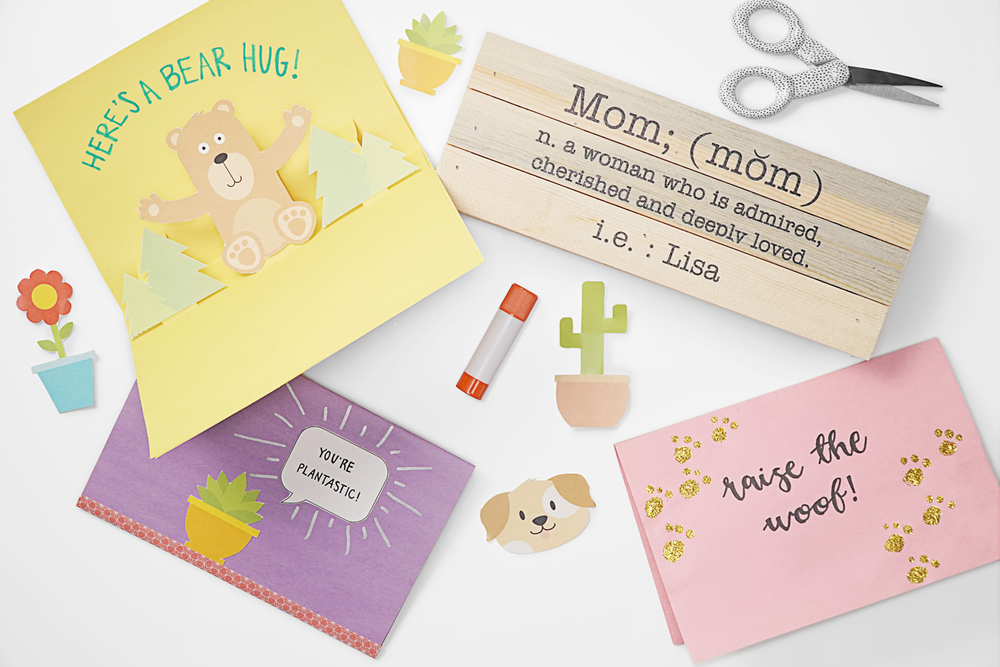
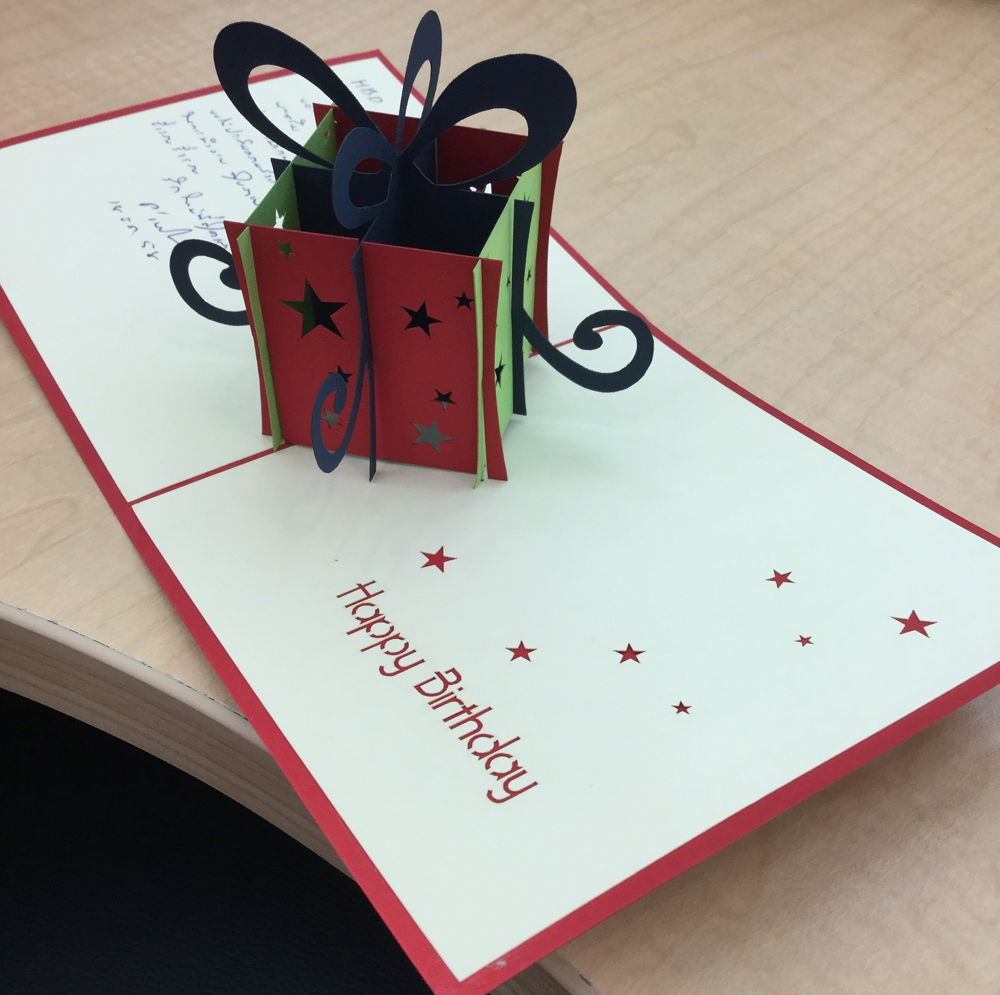
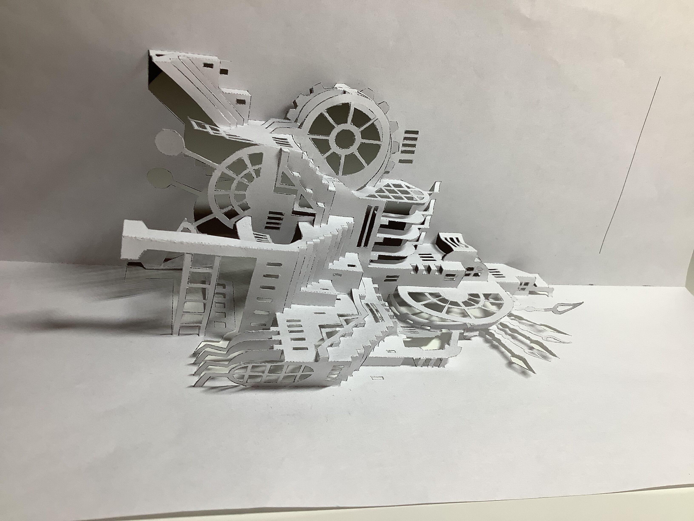
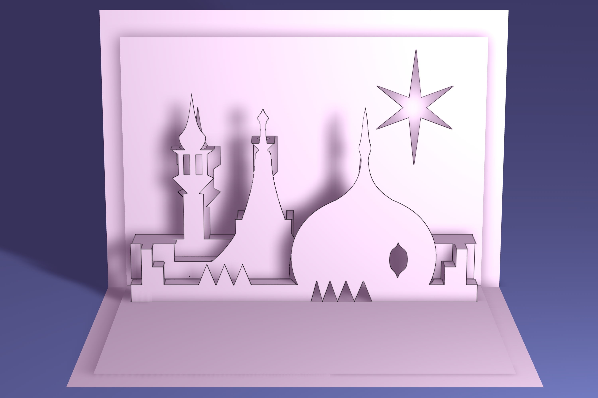
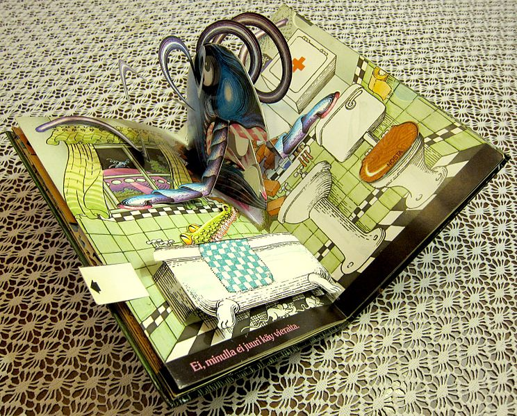
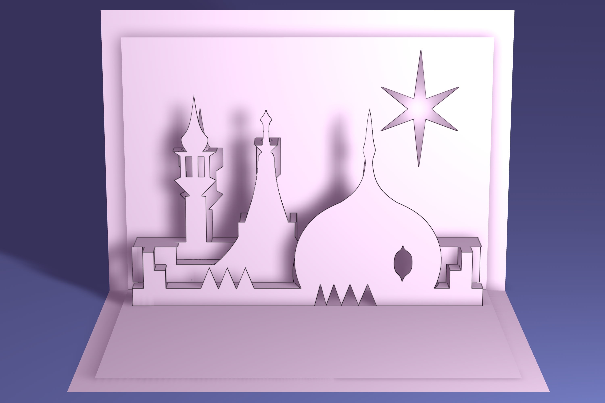
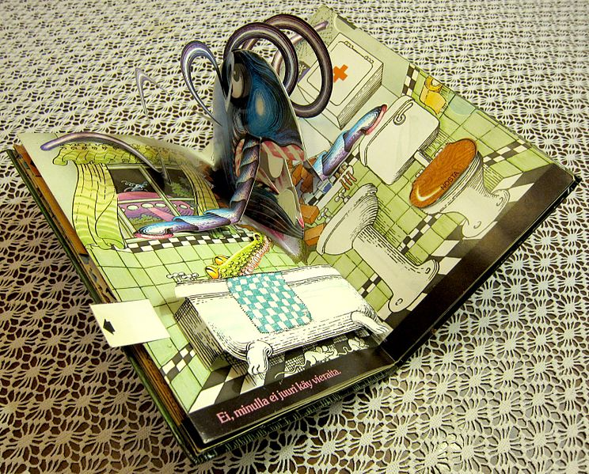
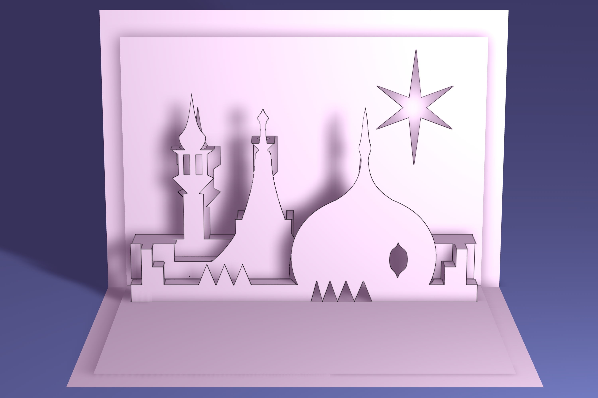
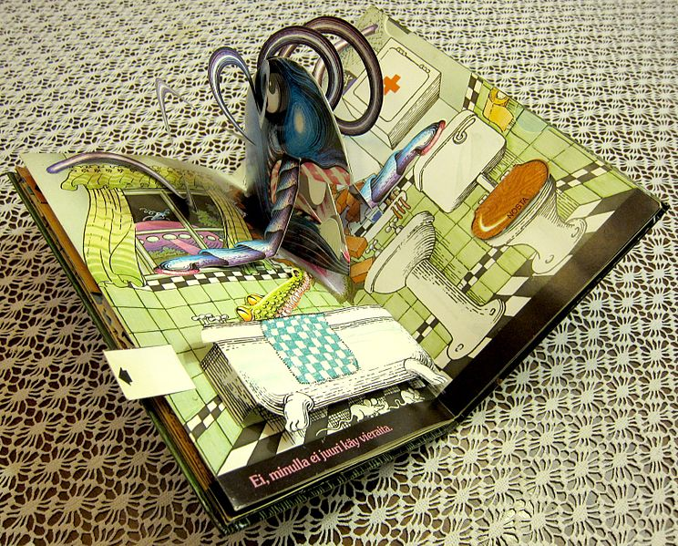

Pop-up Cards

[1]
Introduction
Pop up cards are typically greeting cards with a 3-dimensional paper sculpture or, simply, paper art that may pop right out when you open the card. These pop-up features may also be included in the front, or anywhere, so that the drawings and the art can stand out more and have more layers. It is recommended that you use paper of around 180g of mass for the inside of pop-up cards and around 200-250g for the cover.
For further reading, click here !
You could also click here to visit the Wikipedia page for pop-up books, which is like a combination of multiple pop-up cards!
Art Pieces
Check out this article here to see Tsinghua University's custom hand-made pop-up admission letter!
Click here to see the BLUEPRINTS of some basic pop-up cards so you can make some yourself!

[2]

[3]
[4]
[5]

[6]

[7]
Jump to top !
[1] Personal Creations. Pop-Up Cards. June 25, 2018. flicker.com , https://www.flickr.com/photos/personalcreations/42289961854 .
[2] Panittamaii. Unknown. Dec. 23, 2015. pixabay.com , https://pixabay.com/photos/happy-birthday-to-you-love-1102014/ .
[3] Zhang, Amy. Mechanical City. December 11, 2021. Author's Personal Collection.
[4] Elena Roussakis. elephant party pop-up card (Lawn Fawn inspiration week). March 2, 2017. flicker.com , https://www.flickr.com/photos/mom2sofia/32741929334 .
[5] Dominic Alves. The World Famous Pump Room - Kirigami Pop Up Card. December 24, 2016. flicker.com , https://www.flickr.com/photos/dominicspics/30999888634 .
[6] Dominic Alves. Kirigami Pop Up Card Prince Regent Royal Brighton Pavilion Rooftop. December 28, 2013. flicker.com , https://www.flickr.com/photos/dominicspics/11602008566 .
[7] Kim, Viljanen. Unknown. 25 December 2011. commons.wikimedia.org , https://commons.wikimedia.org/wiki/File:Ponnahduskirjan_toimintaperiaate_-_kuvassa_Jan_Pienkowskin_Kummitustalo_1979.jpg .

 


